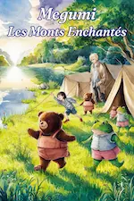
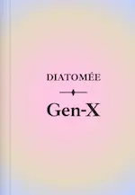
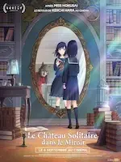
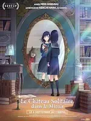
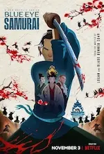
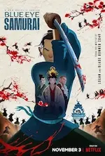
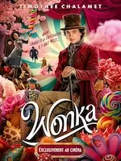
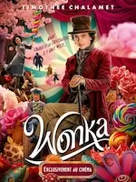
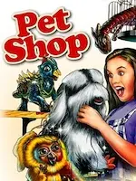
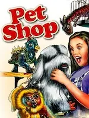

2024
Juillet


Juin
-
30 —
Musique, timidité, bêtise et politiquement incorrect


 ♡ Música, ♡ L’amour au pied du mur, À la conquête de Billy Walsh, L’idée d’être avec toi, My dear f***ing prince
♡ Música, ♡ L’amour au pied du mur, À la conquête de Billy Walsh, L’idée d’être avec toi, My dear f***ing prince - 29 — Objectif petit ami, roman
-
29 —
Dessins du passé


- 27 —  Megumi - Les Monts Enchantés deuxième version, roman
-
23 —
 Les dents de Chastel, roman
Les dents de Chastel, roman
-
16 —
 Megumi - Le ponson magique, roman
Megumi - Le ponson magique, roman
-
13 —
 Megumi - Les Monts enchantés, roman
Megumi - Les Monts enchantés, roman
-
02 —
Dernières lectures

 Les abysses du mal (Marc Charuel), Sang d'encre (Robert Galbraith)
Les abysses du mal (Marc Charuel), Sang d'encre (Robert Galbraith)
Avril
-
20 —
 À son image de Jérôme Ferrari
À son image de Jérôme Ferrari
- 06 — À la lumière du petit matin d’Agnès Martin-Lugand
- 06 —  Gen-X de Diatomée
-
01 —
Action, poésie et comédie
 
 Road House, Le château solitaire dans le miroir, Pourquoi j’ai pas mangé mon père
Road House, Le château solitaire dans le miroir, Pourquoi j’ai pas mangé mon père
Mars
- 15 — Mon profil de personnalité actuel
-
15 —
Deux séries : comédie et drame

 Suburgatory, ♡ AlRawabi School for Girls
Suburgatory, ♡ AlRawabi School for Girls
Février
-
11 —
Des mentors, de l’amour et un carnage


 ♡ The Tiger’s Apprentice, The Underdoggs, Welcome to Valentine, Blue Eye Samurai
♡ The Tiger’s Apprentice, The Underdoggs, Welcome to Valentine, Blue Eye Samurai -
03 —
Une série et deux films français étonnants

 Le règne animal , Je verrai toujours vos visages, Panda
Le règne animal , Je verrai toujours vos visages, Panda

 


 
